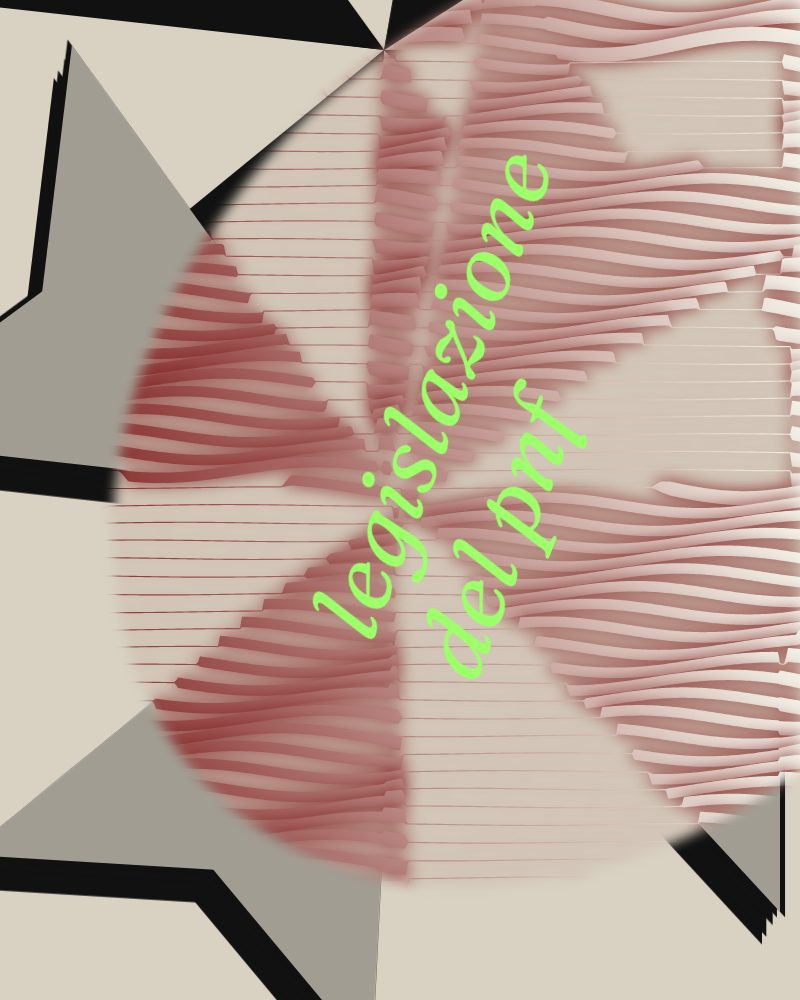
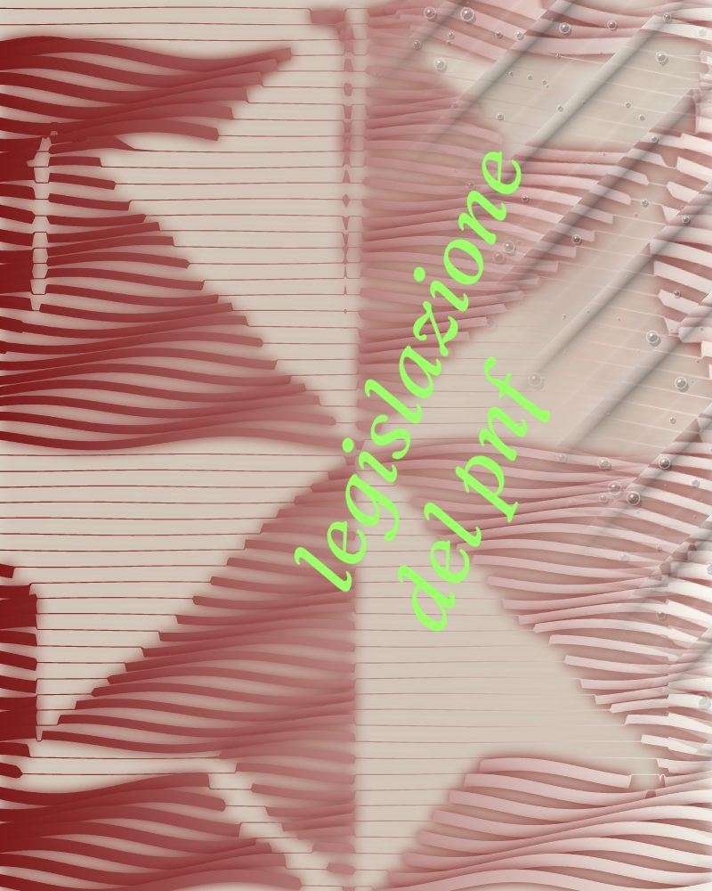

Giorno 1835

Attività assicurano fruizione
ho letto "Italia"; "fruizione" per me gira a vuoto; ricerca "città" (esplorare): Che forma ha città?; sferzata: una parola sola, enorme, che esce dal foglio
Oggi: fruizione. Ho letto "Italia"; "fruizione" per me gira a vuoto; ricerca "città" (esplorare): Che forma ha città?; sferzata: una parola sola, enorme, che esce dal foglio.
Da Wikipedia: «grotta guattari».
Ho caleido, cambiato la luce, ombra, tagliato (2 volte), tolto un livello (2 volte), spostato le cose (3 volte), scritto.
Fruizione di economia. Economia, quasi sistema economico. Attività assicurano fruizione.
Ha retto: Tradisce quello che credevo di cercare (20%).
È caduto: Il baricentro sta su un terzo: la composizione respira.
come ne ho discusso con me stesso — la butto
formale (pro, 1.50): Il baricentro sta su un terzo: la composizione respira. — cade
formale (pro, 1.25): Fuori centro quanto basta: c'è una forza che tira. — cade
occhio (pro, 1.00): Le diagonali (58%) mettono tutto in caduta. — regge
conservatore (contro, 1.80): Tradisce quello che credevo di cercare (20%). — regge
intenzione (contro, 1.75): "fruizione" si è perso per strada. — regge
intenzione (pro, 0.75): Viene da: Italia. — regge
pubblico (contro, 1.48): Chi la guarda direbbe: "vuota". — regge
materia (contro, 1.25): Troppo liscio, sa di schermo. — regge

Economia come sistema
ho letto "Italia"; "fruizione" per me gira a vuoto; ricerca "città" (esplorare): Che forma ha città?; sferzata: una parola sola, enorme, che esce dal foglio; ritento dopo averla buttata
Oggi: fruizione. Ho letto "Italia"; "fruizione" per me gira a vuoto; ricerca "città" (esplorare): Che forma ha città?; sferzata: una parola sola, enorme, che esce dal foglio; ritento dopo averla buttata.
Da Wikipedia: «svilupparono la cultura di arzachena».
Ho caleido, ombra, tagliato, tolto un livello (4 volte), spostato le cose (4 volte), scritto, ondine. Ho annullato 2 gesti dopo averli guardati.
Fruizione, che è domanda. Domanda, che è oggetto. Attività assicurano fruizione.
Ha retto: Tiene i miei criteri (58%).
come ne ho discusso con me stesso — la tengo
occhio (pro, 1.50): Parla soprattutto per punti: una lingua sola, chiara. — regge
conservatore (pro, 1.68): Tiene i miei criteri (58%). — regge
intenzione (pro, 0.75): Viene da: Italia. — regge
pubblico (pro, 0.98): Si legge: si capisce cosa sto facendo. — regge

Economia, che è sistema
ho letto "Italia"; "fruizione" per me gira a vuoto; ricerca "città" (esplorare): Che forma ha città?; sferzata: una parola sola, enorme, che esce dal foglio; ritento dopo averla buttata; serie: varia la tavola precedente
Oggi: fruizione. Ho letto "Italia"; "fruizione" per me gira a vuoto; ricerca "città" (esplorare): Che forma ha città?; sferzata: una parola sola, enorme, che esce dal foglio; ritento dopo averla buttata; serie: varia la tavola precedente.
Da Wikipedia: «controriforma il barocco».
Ho caleido, ombra, tagliato (2 volte), tolto un livello (4 volte), spostato le cose (5 volte), scritto, ondine, vetro, dato materia con un effetto. Ho annullato 2 gesti dopo averli guardati.
Fruizione di economia. Economia, che è fatto. Attività assicurano fruizione.
Ha retto: Tiene l'intenzione: "fruizione" si vede (terzi, densita, contrasto).
come ne ho discusso con me stesso — la tengo
formale (pro, 1.25): Fuori centro quanto basta: c'è una forza che tira. — regge
occhio (pro, 1.50): Parla soprattutto per punti: una lingua sola, chiara. — regge
conservatore (pro, 1.73): Tiene i miei criteri (59%). — regge
intenzione (pro, 2.00): Tiene l'intenzione: "fruizione" si vede (terzi, densita, contrasto). — regge
intenzione (pro, 0.75): Viene da: Italia. — regge
coerenza (pro, 1.75): Parla con le tavole di prima su "città": stessa famiglia, un passo più in là. — regge
pubblico (pro, 1.00): Si legge: si capisce cosa sto facendo. — regge